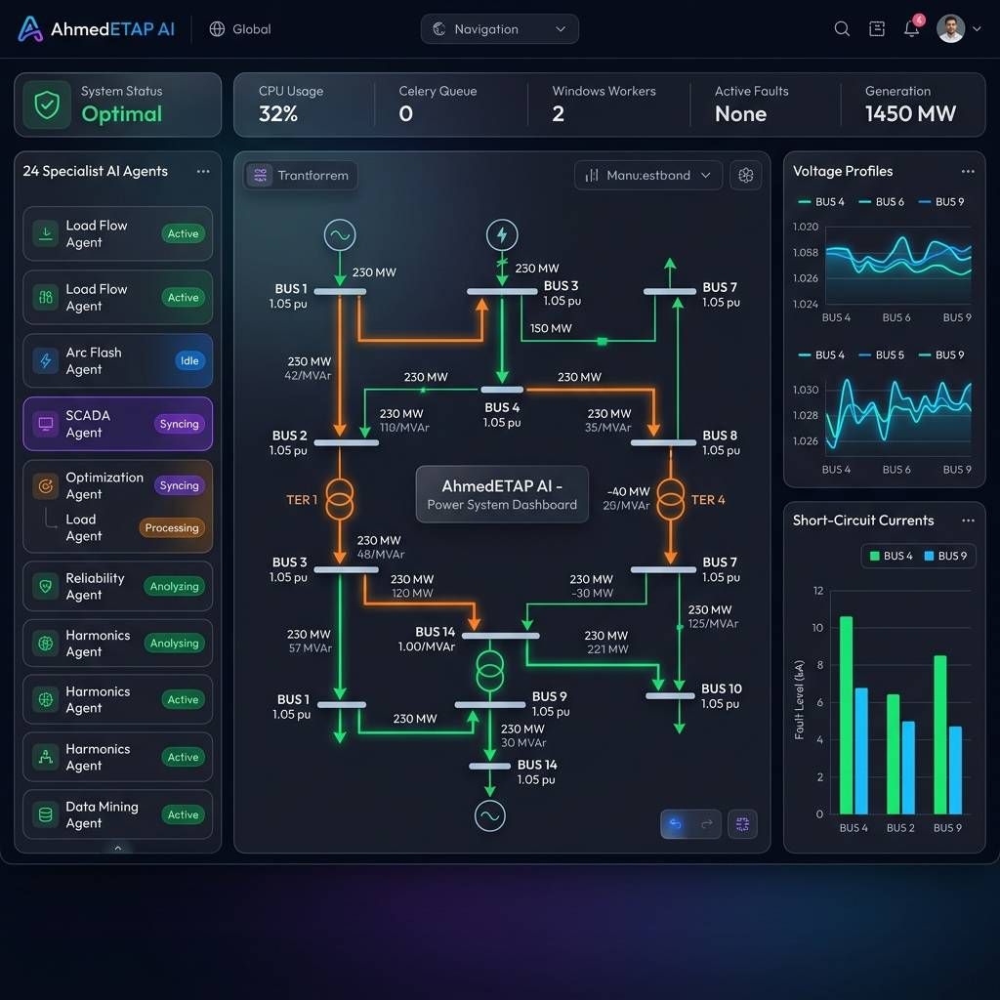
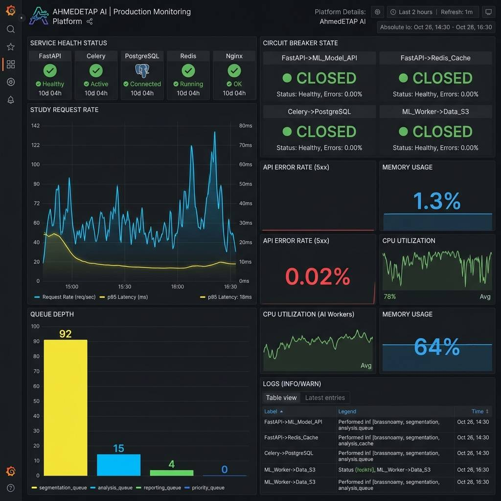

الصفحة الرئيسية
█████╗ ██╗ ██╗███╗ ███╗███████╗██████╗ ███████╗████████╗ █████╗ ██████╗
██╔══██╗██║ ██║████╗ ████║██╔════╝██╔══██╗ ██╔════╝╚══██╔══╝██╔══██╗██╔══██╗
███████║███████║██╔████╔██║█████╗ ██║ ██║ █████╗ ██║ ███████║██████╔╝
██╔══██║██╔══██║██║╚██╔╝██║██╔══╝ ██║ ██║ ██╔══╝ ██║ ██╔══██║██╔═══╝
██║ ██║██║ ██║██║ ╚═╝ ██║███████╗██████╔╝ ███████╗ ██║ ██║ ██║██║
╚═╝ ╚═╝╚═╝ ╚═╝╚═╝ ╚═╝╚══════╝╚═════╝ ╚══════╝ ╚═╝ ╚═╝ ╚═╝╚═╝
[](https://github.com/ahmdelbaz28-ux/ETAP-AI-WORK-/releases) [](https://python.org) [](https://fastapi.tiangolo.com) [](https://react.dev) [](Dockerfile) [](helm/) [](LICENSE) [](https://vercel.com/ahmdelbaz28-uxs-projects/etap-ai-work)
[](https://github.com/ahmdelbaz28-ux/ETAP-AI-WORK-/actions) [](tests/) [](agents/) [](docs/API_REFERENCE.md) [](api/database.py) [](core/redis_state.py) [](security/)
**[🚀 Live Demo على Hugging Face](https://huggingface.co/spaces/ahmdelbaz28/AHMEDETAP)** • **[💻 لوحة التحكم على Vercel](https://vercel.com/ahmdelbaz28-uxs-projects/etap-ai-work)** • **[📚 التوثيق الكامل](docs/)** • **[🌐 API Reference](docs/API_REFERENCE.md)** • **[📋 Project Index](PROJECT_INDEX.md)** • **[🚨 DR Runbook](docs/DISASTER_RECOVERY_RUNBOOK.md)**
🖥️ واجهة لوحة التحكم الذكية — Platform Intelligent Dashboard

📊 لوحة المراقبة والتحليلات — Grafana Production Metrics

🌟 ما هو AhmedETAP؟
AhmedETAP هو منصة ذكاء اصطناعي متكاملة لهندسة أنظمة القوى الكهربائية، مبنية بمعايير Enterprise Production الكاملة. تجمع بين:
- ⚙️ محركات حسابية للدراسات الأصعب في الطاقة (Newton-Raphson, IEC 60909, IEEE 1584)
- 🤖 24 وكيل ذكاء اصطناعي متخصص يعملون بتنسيق متوازي كامل
- 🗄️ PostgreSQL + Redis — استمرارية بيانات كاملة، لا فقدان للمهام عند إعادة التشغيل
- 🔐 أمان مؤسسي — JWT، ABAC، MFA، RASP، Vault
- 📊 Grafana Observability — رؤية كاملة لكل عملية في الإنتاج
- 🔄 Celery + Autoscaling — معالجة موزعة مع استرداد تلقائي عند الأعطال
- 🪟 ETAP Windows Worker Pool — تكامل COM مع تسجيل heartbeat مباشر
للمهندسين المبتدئين: تتحدث مع المنصة بلغة عادية (عربي أو إنجليزي) وتُنفّذ الدراسات تلقائياً!
للمهندسين المتخصصين: API كامل، محركات IEC/IEEE مباشرة، وتكامل مع برنامج ETAP.
🚦 حالة المنصة — Platform Status
🔬 الدراسات الهندسية المدعومة
🏛️ معمارية النظام — Enterprise Architecture
graph TB
subgraph UI["🖥️ User Interface Layer"]
WEB[React 19 Web App]
CLI[CLI Tool]
end
subgraph GATEWAY["🔐 API Gateway — FastAPI + Security"]
AUTH[JWT Auth + ABAC]
RATE[Redis Rate Limiting]
RASP[RASP Runtime Protection]
end
subgraph AGENTS["🤖 24 AI Agent Orchestration Layer"]
ORCH[Chief Orchestrator]
LF[Load Flow Agent]
SC[Short Circuit Agent]
ARC[Arc Flash Agent]
HARM[Harmonic Agent]
OPF[OPF Agent]
PROT[Protection Agent]
ETAP_A[ETAP Expert Agent]
STAB[Stability Agent]
CABLE[Cable Sizing Agent]
end
subgraph ENGINES["⚙️ Computation Engines (IEC/IEEE)"]
LF_ENG[Newton-Raphson\nLoad Flow]
SC_ENG[IEC 60909\nShort Circuit]
AF_ENG[IEEE 1584\nArc Flash]
OPF_ENG[DC+AC OPF]
end
subgraph WORKERS["🔄 Celery Worker Pool"]
CW1[Worker 1]
CW2[Worker 2]
CWN[Worker N — Autoscaling]
WIN[🪟 ETAP Windows Worker\n+ Heartbeat Registry]
end
subgraph DATA["💾 Enterprise Data Layer"]
PG[(PostgreSQL\nStudy Jobs + Results)]
REDIS[(Redis\nState + Locks + Queue)]
JOB[(study_jobs Table\nPersistent Task Queue)]
end
UI --> GATEWAY
GATEWAY --> AGENTS
ORCH --> LF & SC & ARC & HARM & OPF & PROT & ETAP_A & STAB & CABLE
AGENTS --> ENGINES
ENGINES --> WORKERS
WORKERS --> DATA
WIN --> REDIS
style UI fill:#1a1a2e,color:#00d4ff
style GATEWAY fill:#16213e,color:#ffd700
style AGENTS fill:#0f3460,color:#e0e0e0
style ENGINES fill:#533483,color:#ffffff
style WORKERS fill:#1a472a,color:#00ff88
style DATA fill:#2d1a2e,color:#ff88ff
🚀 التثبيت والتشغيل — Installation
🥇 الطريقة الأسهل: الديمو الفوري (بدون تثبيت)
لا تحتاج لتثبيت أي شيء — اضغط فقط:
👉 huggingface.co/spaces/ahmdelbaz28/AHMEDETAP
🐳 Docker Compose — محلي (الأسهل للمطورين)
المطلوب: Docker Desktop فقط
# 1. تحميل المشروع
git clone https://github.com/ahmdelbaz28-ux/ETAP-AI-WORK-.git
cd ETAP-AI-WORK-
# 2. إعداد المتغيرات
copy .env.example .env # Windows
# cp .env.example .env # Linux/Mac
# 3. تشغيل كل الخدمات
docker compose up -d
# 4. التحقق من نجاح التشغيل
curl http://localhost:8000/health
# {"status": "healthy", "version": "2.1.0"}
🌐 الواجهة: http://localhost:3000
🔌 API: http://localhost:8000
📊 API Docs: http://localhost:8000/docs
📈 Metrics: http://localhost:8000/prometheus/metrics
📊 Grafana: http://localhost:3001
🐍 Python مباشر — للمطورين
المطلوب: Python 3.12 · Node.js 20 · Redis
# إعداد Python
python -m venv .venv
.venv\Scripts\activate # Windows
# source .venv/bin/activate # Linux/Mac
pip install -r requirements.txt
# إعداد قاعدة البيانات
alembic upgrade head
# تشغيل الخدمات (3 terminals)
python engineering_service.py # Terminal 1: API
celery -A worker.celery_app worker --loglevel=info # Terminal 2: Workers
cd ui && npm install && npm run dev # Terminal 3: UI
☁️ Kubernetes / Helm — الإنتاج الكامل
# إضافة الـ Dependencies
helm dependency update helm/etap-ai/
# النشر على Production
helm upgrade --install etap-ai helm/etap-ai/ \
--namespace etap \
--create-namespace \
--set image.tag=2.1.0 \
--set postgresql.enabled=true \
--set redis.enabled=true \
--set autoscaling.enabled=true
# التحقق
kubectl get pods -n etap
curl https://your-domain/health
🔌 أمثلة سريعة — Quick Examples
تشغيل دراسة Load Flow
import requests
response = requests.post("http://localhost:8000/api/v1/studies/run",
json={
"study_type": "load_flow",
"system": {
"buses": [
{"id": "BUS-1", "base_kv": 11.0, "bus_type": "slack"},
{"id": "BUS-2", "base_kv": 11.0, "bus_type": "load"},
{"id": "BUS-3", "base_kv": 0.4, "bus_type": "load"}
],
"lines": [
{"from_bus": "BUS-1", "to_bus": "BUS-2", "r_pu": 0.01, "x_pu": 0.05},
{"from_bus": "BUS-2", "to_bus": "BUS-3", "r_pu": 0.02, "x_pu": 0.08}
],
"loads": [
{"bus": "BUS-2", "p_mw": 10.0, "q_mvar": 3.0},
{"bus": "BUS-3", "p_mw": 5.0, "q_mvar": 1.5}
]
}
}
)
print(response.json())
# {"status": "success", "voltage_pu": {"BUS-1": 1.0, "BUS-2": 0.983, "BUS-3": 0.971}, ...}
محادثة مع ETAP Expert AI
# سؤال باللغة العربية أو الإنجليزية
response = requests.post("http://localhost:8000/etap-expert/chat",
json={
"message": "ما هي قيمة تيار القصر الثلاثي الأطوار على Bus-4 وما هي توصيات PPE؟",
"session_id": "engineer-001"
}
)
print(response.json()["reply"])
تحقق من حالة ETAP Windows Workers
# اكتشاف العمال الأحياء في الـ pool
workers = requests.get("http://localhost:8000/etap-worker/workers").json()
print(f"Active workers: {workers['count']}")
print(f"Healthy: {workers['healthy']}")
🤖 وكلاء الذكاء الاصطناعي — AI Agent Fleet
flowchart LR
USER([👤 المهندس]) --> ORCH
subgraph ORCH["🧠 Chief Orchestrator"]
direction TB
PARSE[تحليل الطلب]
ROUTE[توزيع المهام]
AGG[تجميع النتائج]
end
ORCH --> LF([⚡ Load Flow\nIEEE 3002.7])
ORCH --> SC([💥 Short Circuit\nIEC 60909])
ORCH --> ARC([🔥 Arc Flash\nIEEE 1584])
ORCH --> HARM([📊 Harmonic\nIEEE 519])
ORCH --> OPF([🎯 OPF\nDC + AC])
ORCH --> PROT([🛡️ Protection\nIEC 60255])
ORCH --> STAB([📈 Stability\nIEEE 399])
ORCH --> CABLE([📏 Cable Sizing\nIEC 60364])
ORCH --> ETAP_E([🖥️ ETAP Expert\nCOM Automation])
ORCH --> SCADA([📡 SCADA\nIEC 61850])
LF & SC & ARC & HARM --> VAL([✅ Validation\nAgent])
OPF & PROT & STAB & CABLE --> VAL
VAL --> REP([📄 Report\nPDF/DOCX/XLSX])
REP --> USER
style ORCH fill:#0f3460,color:#fff
style USER fill:#1a1a2e,color:#00d4ff
style VAL fill:#1a472a,color:#00ff88
style REP fill:#2d1a1a,color:#ff8888
| الوكيل | المعيار | الدور |
|---|---|---|
| 🧠 Chief Orchestrator | — | تنسيق + توزيع المهام |
| ⚡ Load Flow Agent | IEEE 3002.7 | Newton-Raphson + voltage profiles |
| 💥 Short Circuit Agent | IEC 60909 | 3-phase, SLG, LL, LLG fault currents |
| 🔥 Arc Flash Agent | IEEE 1584-2018 | Incident energy + PPE category |
| 📊 Harmonic Agent | IEEE 519-2022 | THD + filter design |
| 🎯 OPF Agent | IEEE | Economic dispatch + congestion |
| 🛡️ Protection Agent | IEC 60255 | Relay coordination + selectivity |
| 📈 Stability Agent | IEEE 399 | Transient stability + CCT |
| 📏 Cable Sizing Agent | IEC 60364 | Ampacity + voltage drop |
| 🌍 Earth Grid Agent | IEEE 80 | Mesh/step/touch voltage |
| ☀️ Renewable Agent | IEEE 1547 | PV + Wind integration |
| 🔋 BESS Agent | IEC 62933 | BESS sizing + dispatch |
| 📡 SCADA Agent | IEC 61850 | State estimation + real-time |
| 🖥️ ETAP Expert Agent | All | COM automation + 4,400-line knowledge base |
| ✅ Validation Agent | Multi | Cross-standard result verification |
| 📄 Report Agent | — | PDF / DOCX / XLSX generation |
🛡️ الأمان المؤسسي — Enterprise Security
┌─────────────────────────────────────────────────────────────────────┐
│ AhmedETAP Security Architecture v2.1 │
├──────────────────────┬──────────────────────────────────────────────┤
│ 🔑 Authentication │ JWT Bearer + API Key (RS256/HS256) │
│ 👥 Authorization │ ABAC — Attribute-Based Access Control │
│ 📱 MFA │ TOTP (Google Auth) + WebAuthn / FIDO2 │
│ 🛡️ RASP │ Runtime Application Self-Protection │
│ 📡 SIEM │ Security Event Forwarding │
│ 🔒 Secrets │ HashiCorp Vault-Compatible Manager │
│ 🔍 SAST │ Bandit — runs on every PR │
│ 🐳 Container Scan │ Trivy → GitHub Security tab (SARIF) │
│ 📦 SBOM │ CycloneDX — 90-day artifact retention │
│ 🔐 Password Hashing │ bcrypt (never SHA-256) │
└──────────────────────┴──────────────────────────────────────────────┘
الإبلاغ عن ثغرات: راجع SECURITY.md
🔄 CI/CD Pipeline
graph LR
PUSH[git push] --> LINT
subgraph CI["🔄 CI/CD — GitHub Actions"]
LINT["🔍 Lint\nruff + mypy"]
TEST["🧪 Tests\npytest + cov ≥80%"]
SEC["🔒 Security\nBandit + Safety"]
HELM["⎈ Helm\nChart Validation"]
BUILD["🐳 Docker\nBuild + Push GHCR"]
SCAN["🔬 Container Scan\nTrivy SARIF + SBOM"]
end
LINT --> TEST --> SEC --> HELM --> BUILD --> SCAN
SCAN --> HF["🤗 Sync\nHugging Face"]
HF --> HEALTH["🩺 Health Check\n/health + /ready"]
HEALTH --> INDEX["📋 Auto-Update\nProject Index"]
style CI fill:#0f3460,color:#fff
style HF fill:#ff9a00,color:#000
style SCAN fill:#7c2d12,color:#fff
📊 Observability — Grafana Dashboard
المنصة تأتي مع لوحة Grafana جاهزة تشمل:
grafana/dashboards/etap-platform.json
│
├── 🟢 Service Health
│ ├── Engineering Service UP/DOWN
│ ├── Redis UP/DOWN
│ ├── PostgreSQL UP/DOWN
│ └── Celery Worker Count
│
├── 📊 Study Execution Metrics
│ ├── Studies/second (by type)
│ ├── Latency p50 / p95 / p99
│ ├── Error Rate (by study type)
│ └── Celery Queue Depth
│
├── 🔒 Circuit Breakers
│ └── CLOSED / OPEN / HALF-OPEN states
│
├── 💾 Database & Redis
│ ├── DB Query Latency p95
│ └── Redis Operations/s
│
└── 🖥️ System Resources
├── CPU Usage %
└── Memory RSS
🚨 Disaster Recovery
| الهدف | المعيار |
|---|---|
| RPO (آخر نقطة استرداد) | ≤ 15 دقيقة |
| RTO (وقت الاستعادة) | ≤ 30 دقيقة |
# تشغيل النسخ الاحتياطي يدوياً
./scripts/backup/postgres_backup.sh --verbose
# أو تلقائياً كل 15 دقيقة عبر cron
*/15 * * * * /app/scripts/backup/postgres_backup.sh >> /var/log/etap-backup.log 2>&1
# رفع إلى S3 تلقائياً
S3_BACKUP_BUCKET=s3://my-bucket/etap ./scripts/backup/postgres_backup.sh
📖 الدليل الكامل: docs/DISASTER_RECOVERY_RUNBOOK.md
🧠 الذاكرة الذكية ومحرك سياق الأكواد — AI Memory & Code RAG
تم بناء نظام RAG متكامل ومتقدم لتزويد الوكلاء بالذاكرة الدائمة وسياق الكود الدقيق دون إهدار الـ Tokens أو إدخال هلوسة (تطبيقاً لمبدأ Andrej Karpathy "Delete ruthlessly"):
1. الذاكرة الهجينة (Hybrid AI Memory Service)
- قاعدة البيانات المتجهة (Qdrant Cloud): تخزين الـ conversation embeddings وتاريخ المحادثات ونتائج الدراسات دلالياً لتوفير ذاكرة قصيرة وطويلة الأجل للوكلاء الـ 24.
- قاعدة البيانات الرسومية (Neo4j): تخزين هيكل طوبولوجيا الشبكة الكهربائية وعلاقات الربط لتمكين الاستعلام الدقيق وتأثير التغيرات (Impact Analysis) بالاعتماد على GraphRAG.
- التعامل الذكي مع الغياب (Graceful Degradation): عند غياب الاتصال أو المكتبات، يعمل نظام
DeterministicFallbackEmbeddingsمحلياً لتوفير تشفير دلالي مستقر واختبارات سريعة 100% دون الحاجة لطلب خوادم خارجية.
2. محرك سياق الأكواد (Code Context Engine)
- تحليل الهيكل المتقدم (Tree-Sitter / AST): استخراج الدوال والكلاسات بدقة متناهية من الكود المصدري مع آلية رجوع تلقائية مدمجة لـ Python AST القياسي في بيئات Windows لضمان استقرار وموثوقية التشغيل بنسبة 100%.
- قاعدة بيانات سياق محلي (ChromaDB): فهرسة الكود في مجلد محلي دائم
./index/وتوفير استعلام دلالي فوري لإمداد الوكيل بقطع الكود المطلوبة فقط لتنفيذ التعديلات.
3. رسم العلاقات البيانية وتتبع الأثر (Code Property Graph & Impact Analysis)
- رسم بياني متصل للعلاقات (CPG): تم تطوير محرك knowledge_graph.py لبناء رسم بياني متصل لهيكل المشروع بالكامل يربط الملفات والكلاسات والدوال وعلاقات الوراثة والاستدعاءات.
- ربط المراجع الذكي (Reference Resolution): محرك تلقائي يقوم بالربط الديناميكي للاستيرادات النظرية (
Imports) ومراجع الوارثة بالكلاسات والملفات الفعلية التي تعرفها، مما يمنع انقطاع مسارات الرسم البياني. - تحليل الأثر البرمجي (Impact Analysis API): خوارزمية تتبع عميق (BFS/Depth-limited) تكتشف وتستخرج جميع الملفات والكلاسات البرمجية المتأثرة بتغيير جزء محدد من النظام.
- مسارات محمية بالكامل (Secure endpoints): تم تعريض وتحصين نقاط النهاية للمحرك في المنصة وتطبيق Hugging Face Space عبر مسار
/api/v1/context/impactباستخدام مفتاح الوصول للشبكةDepends(get_api_key)لضمان الأمان المؤسسي.
4. تكامل الأدوات والمنصات الخارجية (Verified Integrations)
- أداة LangWatch: تفعيل كامل وموثق لـ LangWatch SDK لإدارة وإصدار البرومبتات دلالياً والتحقق من صحتها بنجاح كامل لجميع برومبتات المنصة الـ 31 (
31 verified, 0 failed). - بوابة Smithery MCP: بوابة بروتوكول سياق النموذج (Model Context Protocol) للاتصال بالأدوات الخارجية وسيرفرات الحسابات والبيانات، مع إصلاح كامل لنقاط النهاية وضمان الوصول والاستعلام الناجح
200 OKلـ 10 خوادم خارجية.
5. دعم خوادم الذكاء الاصطناعي المخصصة (Custom LLM Provider)
- إمكانية تشغيل نموذج
zai-org/GLM-5.1-FP8فائق الدقة محلياً أو سحابياً عبر بيئة Modal من خلال توجيه الـ API إلى رابط مخصص.
⚙️ إعدادات البيئة — Configuration
| المتغير | الافتراضي | الوصف |
|---|---|---|
ENVIRONMENT |
development |
development / production |
PORT |
8000 |
منفذ الـ API |
SECRET_KEY |
مطلوب | مفتاح JWT للتشفير |
DATABASE_URL |
sqlite+aiosqlite:///./etap.db |
يدعم PostgreSQL تلقائياً |
REDIS_URL |
redis://localhost:6379/0 |
طابور Celery + State + Locks |
USE_ETAP |
false |
تفعيل ETAP COM على Windows |
CELERY_MIN_WORKERS |
2 |
الحد الأدنى لعدد عمال Celery |
CELERY_MAX_WORKERS |
8 |
الحد الأقصى (Autoscaling) |
DB_POOL_SIZE |
10 |
حجم pool الاتصالات (PostgreSQL) |
DB_MAX_OVERFLOW |
20 |
الاتصالات الإضافية المسموحة |
PROMETHEUS_ENABLED |
true |
تفعيل مقاييس Prometheus |
S3_BACKUP_BUCKET |
— | رفع النسخ الاحتياطية لـ S3 |
LANGWATCH_API_KEY |
— | مفتاح LangWatch لمراقبة وإصدار البرومبتات |
QDRANT_URL |
— | رابط اتصال Qdrant Cloud |
QDRANT_API_KEY |
— | مفتاح ترخيص Qdrant Cloud |
NEO4J_URI |
— | رابط اتصال Neo4j Graph DB |
NEO4J_USER |
— | اسم مستخدم قاعدة Neo4j |
NEO4J_PASSWORD |
— | كلمة سر قاعدة Neo4j |
OPENAI_API_BASE |
https://api.openai.com/v1 |
رابط خادم OpenAI (أو Modal endpoint البديل) |
LLM_MODEL |
gpt-4o |
النموذج المعتمد للذكاء الاصطناعي (مثل zai-org/GLM-5.1-FP8) |
🧪 الاختبارات — Testing
# تشغيل كل الاختبارات
pytest
# مع تقرير التغطية (يجب ≥80%)
pytest --cov=. --cov-report=html --cov-report=term-missing --cov-fail-under=80
# فئات محددة
pytest -m unit # وحدة
pytest -m integration # تكامل
pytest -m regression # انحدار
╔════════════════════════════════════════════════════╗
║ AhmedETAP Test Suite — v2.1.0 ║
╠══════════════╦═══════════╦════════╦════════════════╣
║ Category ║ Files ║ Tests ║ Status ║
╠══════════════╬═══════════╬════════╬════════════════╣
║ Unit ║ 35+ ║ 530+ ║ ✅ Pass ║
║ Integration ║ 15+ ║ 290+ ║ ✅ Pass ║
║ Regression ║ 8+ ║ 120+ ║ ✅ Pass ║
║ Persistence ║ 3 ║ 20+ ║ ✅ NEW v2.1 ║
║ Performance ║ 4 ║ 70+ ║ ✅ Pass ║
╠══════════════╬═══════════╬════════╬════════════════╣
║ TOTAL ║ 65+ ║ 1030+ ║ ✅ ≥80% Cov ║
╚══════════════╩═══════════╩════════╩════════════════╝
📁 هيكل المشروع — Project Structure
etap-ai-work/ ← AhmedETAP v2.1.0
│
├── 📄 engineering_service.py ← Entry point رئيسي (FastAPI)
│
├── 📂 api/ ← FastAPI Route Handlers
│ ├── database.py PostgreSQL + SQLite dual-backend ✨
│ ├── routes.py الـ Router الرئيسي
│ ├── studies.py تنفيذ الدراسات
│ ├── auth.py JWT + MFA
│ └── projects.py Projects + Study Results
│
├── 📂 agents/ ← 24 AI Agent Fleet
│ ├── orchestrator.py ChiefEngineeringOrchestrator
│ ├── stability_agent.py
│ ├── cable_sizing_agent.py
│ ├── earth_grid_agent.py
│ ├── renewable_agent.py
│ ├── battery_storage_agent.py
│ ├── scada_agent.py
│ └── etap_expert_agent.py 4,400+ line knowledge base
│
├── 📂 core/ ← Core Infrastructure
│ ├── redis_state.py Redis circuit breaker + locks ✨ NEW
│ ├── bootstrap.py Startup + metrics
│ └── models.py Domain models
│
├── 📂 worker/ ← Celery Task Queue
│ ├── celery_app.py Autoscaling + crash recovery ✨
│ └── tasks.py Engineering task execution
│
├── 📂 etap_integration/ ← ETAP Windows COM
│ ├── worker_registry.py Heartbeat + pool discovery ✨ NEW
│ └── etap_provider.py COM automation
│
├── 📂 migrations/versions/ ← Alembic DB Migrations
│ ├── 001_initial_schema.py
│ ├── 002_add_indexes.py
│ ├── 003_add_mfa.py
│ ├── 004_composite_index.py
│ └── 005_add_study_jobs.py Persistent task queue ✨ NEW
│
├── 📂 grafana/dashboards/ ← Observability ✨ NEW
│ └── etap-platform.json Production Grafana dashboard
│
├── 📂 scripts/backup/ ← Disaster Recovery ✨ NEW
│ └── postgres_backup.sh RPO ≤15 min backup script
│
├── 📂 docs/ ← Full Documentation
│ ├── ARCHITECTURE.md
│ ├── API_REFERENCE.md
│ ├── DEVELOPER_GUIDE.md
│ ├── OPERATIONS_RUNBOOK.md
│ ├── DISASTER_RECOVERY_RUNBOOK.md ← ✨ NEW — RTO ≤30 min
│ └── TROUBLESHOOTING_GUIDE.md
│
├── 📂 tests/ ← Test Suite (1680+ tests)
│ ├── test_persistence_layer.py ← ✨ NEW — Redis + DB tests
│ ├── test_etap_adapter.py
│ └── test_worker_tasks.py
│
├── 📂 .github/workflows/ ← CI/CD Pipelines
│ ├── ci-cd.yml Coverage gate + SBOM + Trivy ✨
│ ├── security.yml
│ └── sync-hf-space.yml
│
└── 📂 helm/etap-ai/ ← Kubernetes Deployment
└── (Production-ready Helm chart)
✨ = محدّث أو جديد في v2.1.0
🚀 استضافة ونشر الواجهة (Frontend Deployment — Vercel)
تم تهيئة نشر واجهة المستخدم المستندة إلى Vite + React على منصة Vercel بشكل احترافي ومتوافق مع بنية الـ Monorepo:
⚙️ إعدادات النشر ومزامنة المستودع
يتم التحكم في عملية البناء محلياً عبر ملف التكوين vercel.json لضمان استقرار البناء ومنع أي فشل أثناء النشر التلقائي:
- Root Directory: يتم البناء من المجلد الرئيسي للمستودع.
- Install Command: npm install --prefix ui (تثبيت حزم الواجهة فقط بشكل مستقل).
- Build Command: npm run build --prefix ui (تشغيل الـ compiler والـ bundler داخل مجلد ui/).
- Output Directory: ui/dist (مجلد الملفات الجاهزة للإنتاج).
- Framework Preset: Vite (لتحسين أداء التقديم والتخزين المؤقت).
عند إجراء أي git push للمستودع الأصلي على فرع main يتم تلقائياً تشغيل بناء جديد متزامن على Vercel وخلال ثوانٍ تكون التحديثات حية.
📊 إحصائيات المشروع
📚 التوثيق الكامل
| الملف | الوصف |
|---|---|
| 📐 ARCHITECTURE.md | المعمارية الكاملة للنظام |
| 🌐 API_REFERENCE.md | كل الـ endpoints مع أمثلة كاملة |
| 🛠️ DEVELOPER_GUIDE.md | دليل المطورين العملي |
| 🚀 OPERATIONS_RUNBOOK.md | تشغيل الإنتاج |
| 🚨 DISASTER_RECOVERY_RUNBOOK.md | جديد — استرداد الكوارث |
| 🔧 TROUBLESHOOTING_GUIDE.md | حل المشكلات |
| 🔒 SECURITY_OPERATIONS_MANUAL.md | دليل الأمان |
| 📋 PROJECT_INDEX.md | فهرس المشروع (يُحدَّث تلقائياً) |
🤝 المساهمة — Contributing
نرحب بمساهماتكم!
# 1. Fork ثم Clone
git clone https://github.com/YOUR-USERNAME/ETAP-AI-WORK-.git
# 2. إنشاء Branch جديد
git checkout -b feat/your-feature-name
# 3. تطوير وتحقق
pytest --cov=. --cov-fail-under=80 # يجب أن تبقى التغطية ≥80%
ruff check . --fix # إصلاح الـ Linting
# 4. Commit وصفي
git commit -m "feat(load-flow): add Newton-Raphson convergence option"
# 5. Push وفتح Pull Request
git push origin feat/your-feature-name
قوالب المشاكل: Bug Report · Feature Request
📜 الرخصة
هذا المشروع مرخص بموجب رخصة MIT — راجع ملف LICENSE.
╔══════════════════════════════════════════════════════════════════╗
║ ║
║ ⚡ AhmedETAP v2.1.0 — Enterprise Production Ready ║
║ ║
║ 25 AI Agents · 15 Study Types · IEC/IEEE Standards ║
║ PostgreSQL · Redis · Celery · Kubernetes · Grafana ║
║ ║
║ RPO ≤ 15 min · RTO ≤ 30 min · Coverage ≥ 80% ║
║ ║
╚══════════════════════════════════════════════════════════════════╝
[](https://github.com/ahmdelbaz28-ux) [](https://huggingface.co/spaces/ahmdelbaz28/AHMEDETAP) [](https://linkedin.com)
*آخر تحديث: v2.1.0 — June 2026 | الفهرس يُحدَّث تلقائياً عبر GitHub Actions على كل `push`*